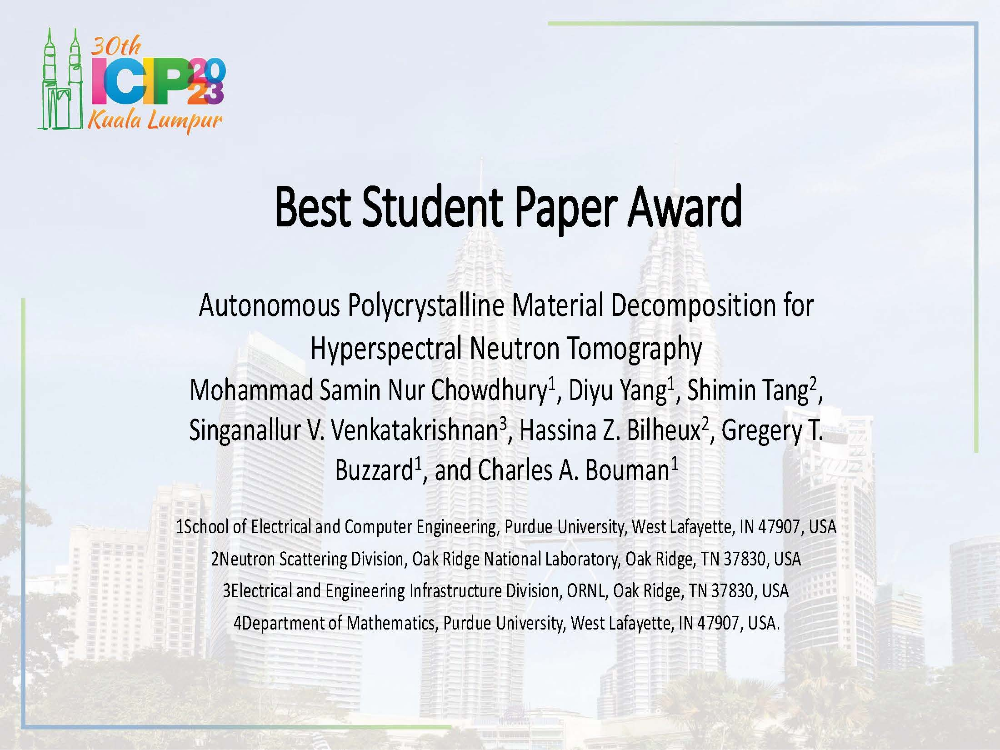
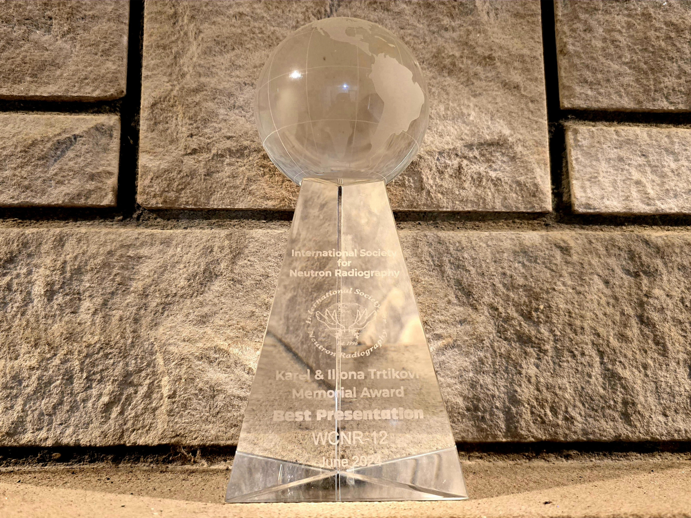
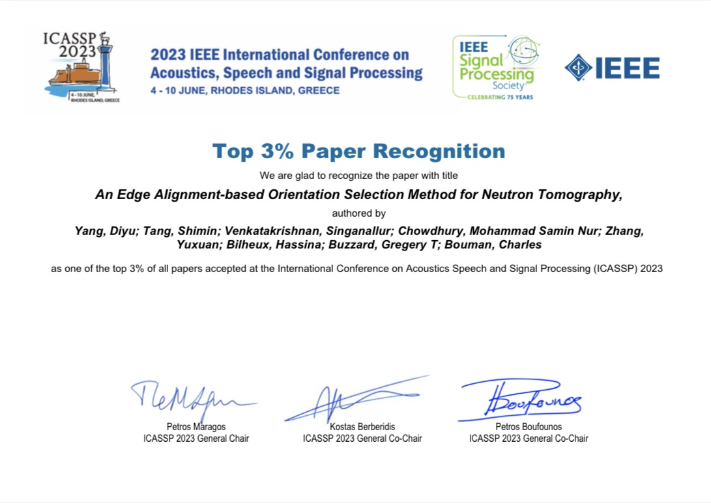

About
Hello! I’m a Ph.D. candidate in Electrical Engineering at Purdue University, advised by Dr. Charles A. Bouman and Dr. Gregory T. Buzzard. I’m passionate about solving challenging inverse problems in imaging. As part of my current research, I have developed physics-informed AI algorithms that are transforming hyperspectral neutron imaging at Oak Ridge National Laboratory and other leading research facilities. Prior to Purdue, I worked at Microsoft as an Image Quality Engineer, improving camera ISP pipelines, and at UNAR Labs as an AI/ML Research Intern, creating computer vision solutions for assistive technologies.
Areas of Expertise
Education
-
Ph.D. in Electrical Engineering
Purdue University, West Lafayette, Indiana, USA | 2026Advisors: Dr. Charles A. Bouman & Dr. Gregory T. Buzzard -
M.S. in Electrical Engineering
Arizona State University, Tempe, Arizona, USA | 2019Advisor: Dr. Daniel W. Bliss -
B.S. in Electrical Engineering
Bangladesh University of Engineering and Technology, Bangladesh | 2016
Programming Languages
ML & CV Libraries
Software Dev. Contributions
Experience
-
Research Assistant
Purdue University, West Lafayette, Indiana, USA | May 2021 – Present• Developed physics-informed AI algorithms for hyperspectral neutron imaging.
• Built high-performance Python packages for fast denoising and reconstruction of large-scale hyperspectral data.
• Collaborated with Oak Ridge National Laboratory to optimize neutron imaging pipelines & processing workflows. -
Teaching Assistant
Purdue University, West Lafayette, Indiana, USA | Jan 2021 – May 2021• Led Python-based lab sessions for Digital Signal Processing with Applications. -
Image Quality Engineer
Microsoft Corporation, Redmond, Washington, USA | Jul 2020 – Dec 2020• Optimized camera ISP and image quality across diverse lighting conditions.
• Developed deep learning models for intelligent image enhancement.
• Collaborated with hardware and software teams to improve the end-to-end imaging pipeline. -
AI/ML Research Intern
UNAR Labs, Portland, Maine, USA | Summer 2020• Designed AI-driven computer vision algorithms for assistive technologies.
• Focused on real-time image analysis, optical character recognition (OCR), and pattern recognition. -
Teaching Assistant
Arizona State University, Tempe, Arizona, USA | Aug 2018 – May 2019• Conducted MATLAB and GNU Radio-based lab sessions for Communication Systems.
Awards
-
Best Student Paper Award – IEEE ICIP 2023

"Autonomous Polycrystalline Material Decomposition for Hyperspectral Neutron Tomography" -
Best Presentation Award – WCNR 2024

"Fast Hyperspectral Reconstruction for Neutron Tomography Using Subspace Extraction" -
Top 3% Paper Recognition – IEEE ICASSP 2023

"An Edge Alignment-based Orientation Selection Method for Neutron Tomography"
Research
Research focuses on developing fast, physics-informed, and machine learning–based algorithms for efficient reconstruction, analysis, and interpretation of hyperspectral and multidimensional imaging data.
Publications
Journal Articles
-
Fast Hyperspectral Neutron Tomography
IEEE Transactions on Computational Imaging, 2025
PDF IEEE Xplore -
A Machine Learning Decision Criterion for Reducing Scan Time for Hyperspectral Neutron Computed Tomography Systems
Scientific Reports, 2024
PDF nature -
Deep Neural Network for Visual Stimulus-Based Reaction Time Estimation Using the Periodogram of Single-Trial EEG
Sensors, 2020
PDF MDPI
Conference Papers
-
MONSTR: Model-Oriented Neutron Strain Tomographic Reconstruction
Proc. IEEE Int. Conf. Image Process. (ICIP), 2025
PDF IEEE Xplore -
Autonomous Polycrystalline Material Decomposition for Hyperspectral Neutron Tomography
Proc. IEEE Int. Conf. Image Process. (ICIP), 2023
PDF IEEE Xplore -
An Edge Alignment-Based Orientation Selection Method for Neutron Tomography
Proc. IEEE Int. Conf. Acoust., Speech, Signal Process. (ICASSP), 2023.
PDF IEEE Xplore -
Multi-Pose Fusion for Autonomous Polycrystalline Material Decomposition in Hyperspectral Neutron Tomography
Proc. Asilomar Conf. Signals, Syst., Comput., 2024
PDF IEEE Xplore -
Fast Hyperspectral Reconstruction for Neutron Computed Tomography Using Subspace Extraction
Proc. 12th World Conf. Neutron Radiography (WCNR-12), 2024
PDF Springer Nature -
Enhancing Reconstruction of Time-of-Flight Neutron Computed Tomography Using Artificial Intelligence
Proc. 12th World Conf. Neutron Radiography (WCNR-12), 2024
PDF Springer Nature -
3D CNN to Estimate Reaction Time from Multi-Channel EEG
Proc. IEEE Eng. Med. Biol. Conf. (EMBC), 2021
PDF IEEE Xplore -
A Generalized Model to Estimate Reaction Time Corresponding to Visual Stimulus Using Single-Trial EEG
Proc. IEEE Eng. Med. Biol. Conf. (EMBC), 2020
PDF IEEE Xplore
Patent
-
Biometric Identification Using Electroencephalogram (EEG) Signals
U.S. Patent Application 17/402,049, 2022
PDF Google Patents
Projects
- Fast Large-Scale Model-Based Iterative Reconstruction (MBIR) Using Vision Transformer
- Hyperspectral Image Denoising via Non-Negative Matrix Factorization (NMF) and Diffusion Model
- Physics-Informed Unsupervised GAN for Strain Tensor Reconstruction
- Automated Object Removal from Images using Segmentation and Inpainting
- Camera-Based Android App for Image Enhancement